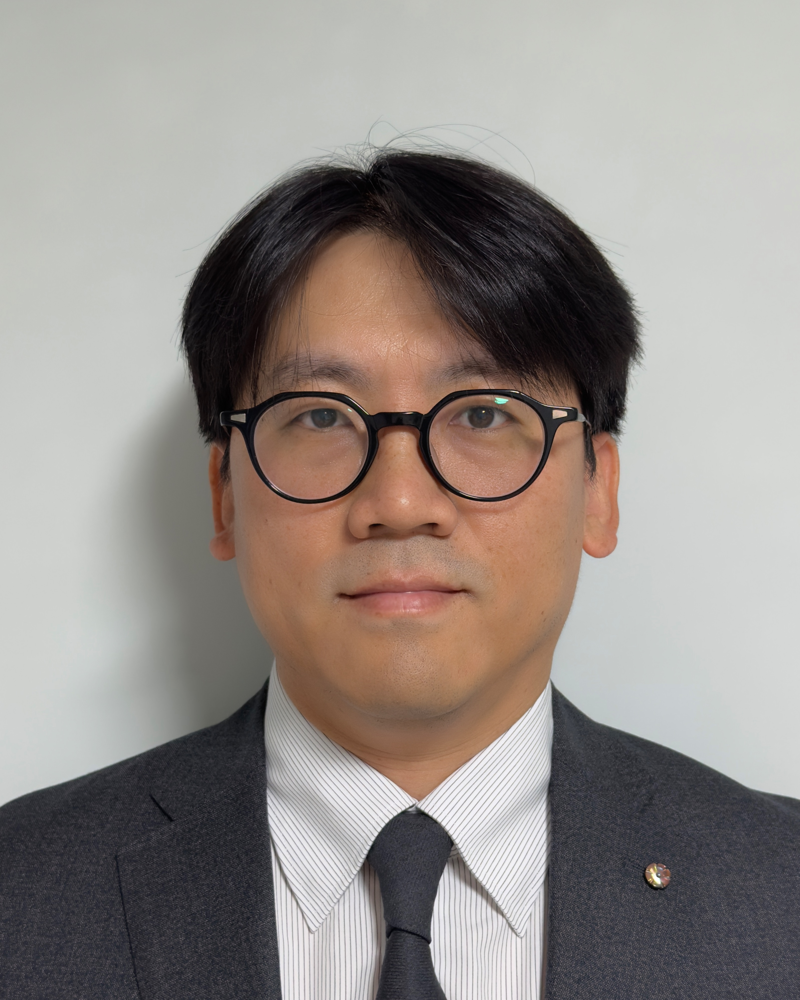
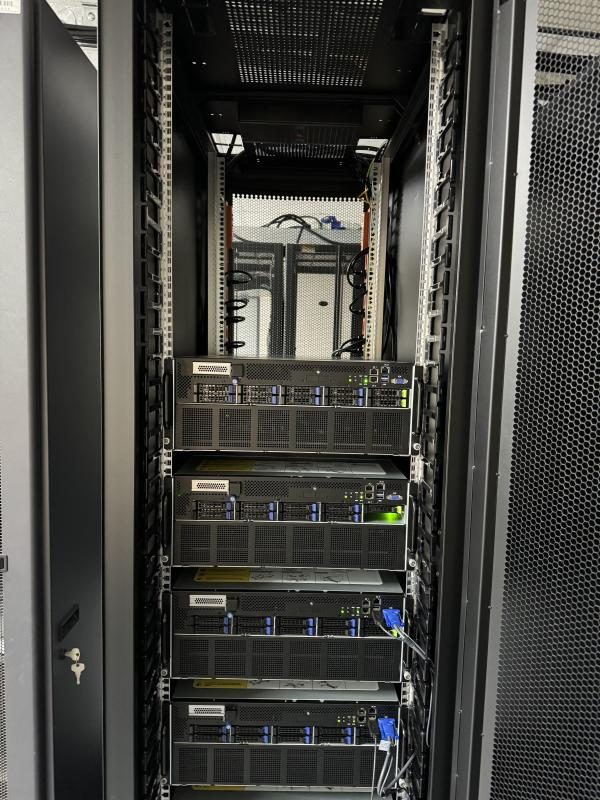
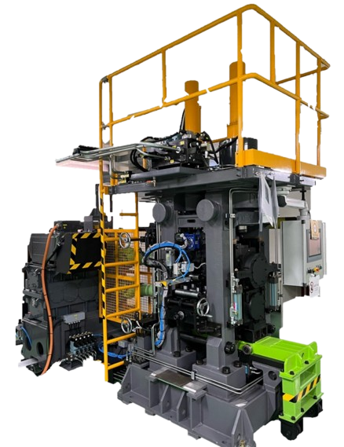
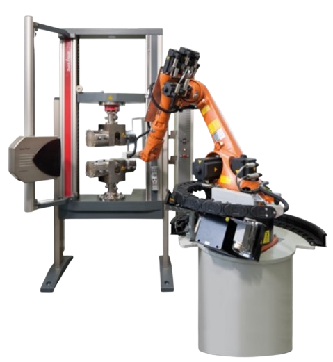
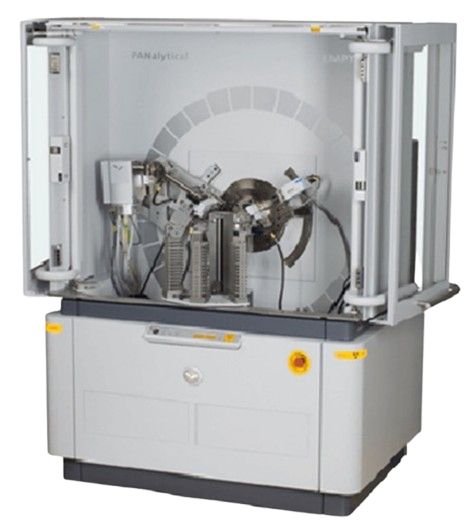
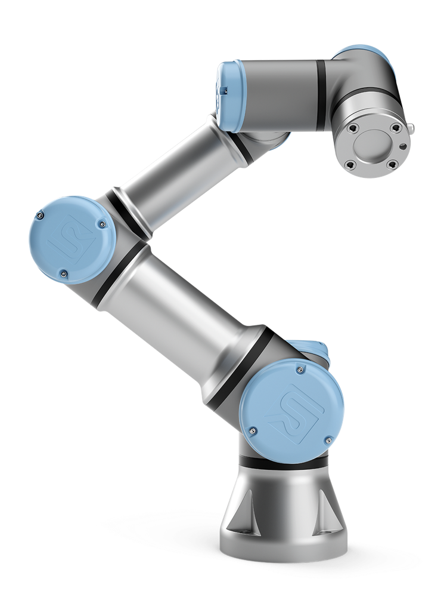
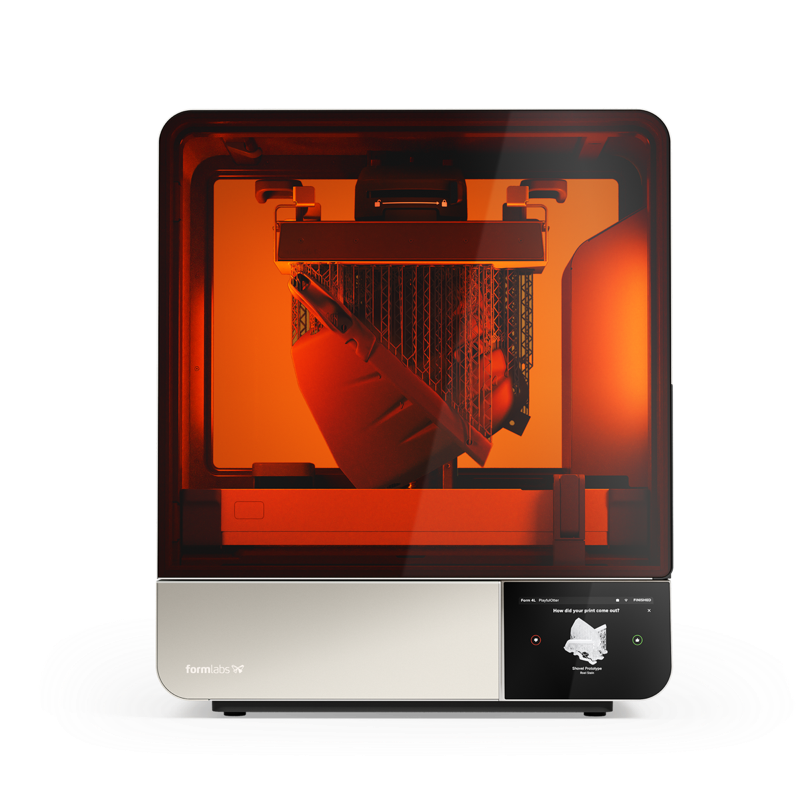

AIMAP · AI for Materials & Processing
People · Benefits · How to Join
Principal Investigator

Ho Won Lee, Ph.D. 이호원
Professor, University of Science and Technology (UST)
Director, Division of Materials AI Research, Korea Institute of Materials Science (KIMS)
Ph.D. Mechanical Engineering, KAIST · formerly Max-Planck-Institut für Eisenforschung (MPIE, Germany)
Editorial Board, Discover Metals (Springer Nature) · Editorial Board, KSTP
Members
Postdoc Minh Tien Tran Ph.D. Hoang Cuong Phan · Mooyeong Joo · Hoang Hai Nam Nguyen
M.S. Phan Nguyen Duc Hieu Intern Byeong Se Choi
Graduate Student Benefits
✓
Full Support for Conference Travel
Registration and travel fully covered — recent talks at ICML and ICCV workshops
✓
Flexible, Autonomous Research Environment
Free use of annual leave, four major insurances included
✓
Mentoring for Top-Tier Journals
23 journal papers in the last two years (incl. IF 14.0)
✓
Research at a Government Institute (KIMS)
Hands-on access to advanced equipment and a large GPU cluster
| Monthly (gross) | 1st year | 2nd year+ |
|---|
| M.S. | 2,125,000 KRW | 2,375,000 KRW |
| Ph.D. | 2,635,000 KRW | 2,945,000 KRW |
UST student researcher rate (as of 2026.07.29)
Selected Publications — PI as Lead/Corresponding Author
IF 11.4
top 1.9%
Quantifying microstructure- and deformation-mode-dependent heterogeneity using crystal plasticity simulationsInternational Journal of Mechanical Sciences (2026) ·
doi.org/10.1016/j.ijmecsci.2026.111818
IF 9.0
top 3.1%
Synthetic microstructure generation using diffusion transformers with structure-preserving augmentationEngineering Applications of Artificial Intelligence (2026) ·
doi.org/10.1016/j.engappai.2026.114543
Flagship Projects
PIFoundation-model AI service for automated design of metal materials & processes
NST (MSIT) · 2026–2030 · KRW 30.5B total
PIDigital innovation platform for metal materials manufacturing
KIAT (MOTIE) · 2022–2026 · KRW 23.2B total
Co-PIAerospace 3D-printing materials database & virtual engineering platform
KIAT (MOTIE) · 2025–2029 · KRW 1.2B total
Research Infrastructure

GPU Cluster
(18× A100 · 24× A6000)

Automatic Rolling Mill

Auto Tensile Machine

X-Ray Diffractometer

Collaborative Robot

Large-Format SLA Printer
We produce process and property data in-house on the rolling mill, tensile machine, and XRD, automate experiments with the robot arm and SLA printer, and train AI models on our GPU cluster — from data generation to validation in one lab.
Apply Now — Grow With Us
Recruiting year-round: M.S./Ph.D. students (UST) incl. the integrated program, postdoctoral researchers, and interns.
Your willingness to learn matters more than your background. Feel free to reach out by email.
Prof. Ho Won Lee · h.lee@kims.re.kr · +82-55-280-3843
Korea Institute of Materials Science, 797 Changwondae-ro, Seongsan-gu, Changwon, Korea